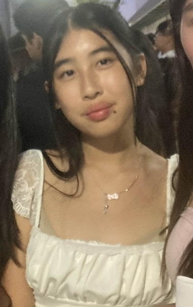

✂This is Joyce Zhang's About Me!
I plan to pursue a career as a Graphic Designer in hopes of using art and technology to bring visions to life through my designs. To do so, the first step needed to complete my goal would be to gain the experience needed to be a graphic designer--which would include learning the principles of design, understanding how to utilize design software and typography to my advantage, and many more concepts related to this field. With the skills learned from the first step, I plan to take it on to a higher level and pursue some degree related to graphic arts or in the fine arts field. The reason why graphic design is my chosen career path is because it’s more or less, a product of two things I’m quite passionate about mixed, which as mentioned before art and technology. I genuinely enjoy spending time on my art, whether it’s just drawing or refining my current abilities, while I’m not the best at technology-based “concepts”, I’m willing and ready to learn!
Though I don’t have professional experience I believe that I possess a few key characteristics of a graphic designer, including creativity (being able to produce original unique designs), having the willingness to learn new concepts and grow from past experiences, and being detail-oriented (ability to focus on both the big and smallest of details). Not to be egotistical but I believe that over the years I’ve compiled a good amount of experience, winning a few small competitions and learning several mediums of art from different teachers. With all that said, I’ve recognized that teamwork and collaboration with others isn’t one of my strengths and is something I will have to consistently practice to improve.
I haven’t been in high school for long at this moment however I do hold a few past achievements. I earned a few ribbons at the Alameda County Fair art competition this summer(2024), which included two first-place ribbons and a “Judge’s Favorite” ribbon, however, I don’t find the pieces I submitted all that favorable. Several contests have been won throughout middle school, but none are that notable. I’ve taken classes on watercolor, digital art, pen and ink, and acrylic painting, which I would say I’m pretty average on and I am currently taking a charcoal-based class.
Though I’m still learning and developing my skills, I’m excited to continue down this path and see how much I can grow. I believe that every step I take will bring me new opportunities to improve as I work toward becoming a graphic designer. Thank you for taking the time to read more about me and please feel free to look through the rest of my site!
♡